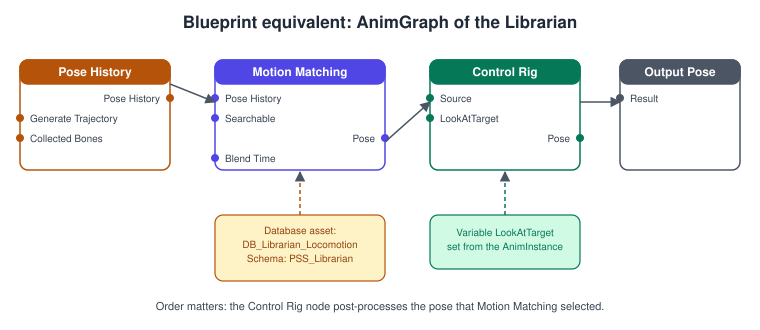
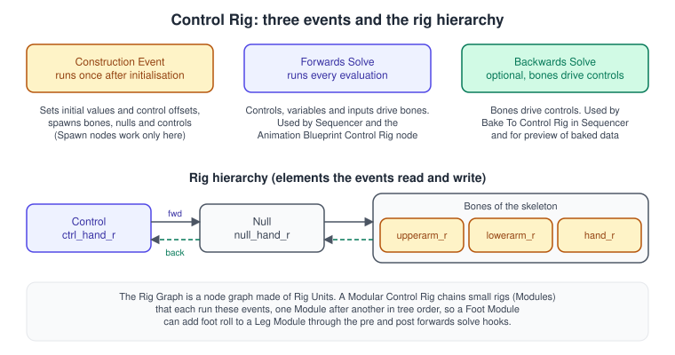
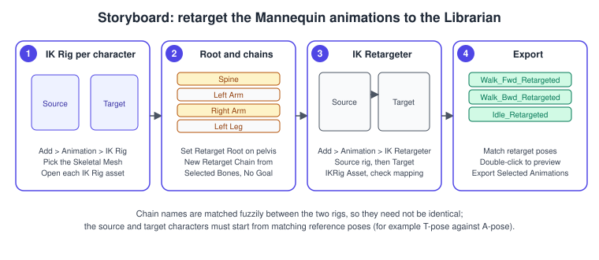
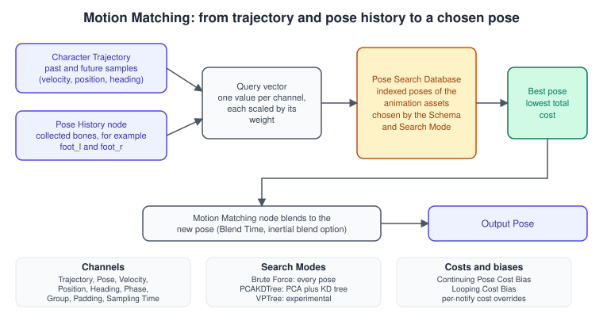

Control Rig and Motion Matching
|
This content was generated with the assistance of AI and should be verified against the official documentation before being relied on in production. |
A skeletal character is posed from three directions at once. Authored clips say what the body looks like in general (a walk, a reach), a rig adds corrections computed from the world (the head turns toward the book, the hand lands on the shelf), and a selection system decides which clip to play at each moment. In Unreal Engine the corrections come from Control Rig and the IK Rig, the selection can come from state machines or from Motion Matching, and the character’s body in the world is moved by the Character Movement Component or its experimental successor, Mover. The Animation Blueprint, covered in Animation Blueprints and State Machines, is the place where all of these meet.
The facts on this page were checked in November 2026 against the Unreal Engine 5.8 documentation (5.8 was released on 2026-06-17, and the latest hotfix found is 5.8.4). The features work in the editor on Windows, macOS and Linux and in packaged builds
for every platform Unreal targets, with one limit: several pieces are labelled Beta or Experimental and the stability label is stated wherever a feature is introduced. In the running example this page animates the librarian:
ALibrarianCharacter, driven by ALibrarianAIController, walks along L_Library with Motion Matching, looks at the book it is carrying with a Control Rig, and reaches to the sockets BookSlot_0 and following of AShelfActor when it
re-shelves a book. The model is the shared bookshelf.glb; the librarian skeleton and its clips come from the Third Person template (the Mannequin) or from the Game Animation Sample Project.
The animation stack at a glance

The figure is the Blueprint equivalent of the whole page. In the Animation Blueprint’s AnimGraph the Pose History node records where the collected bones have been, the Motion Matching node picks the best pose from a
database and blends to it, the Control Rig node post-processes that pose, and the result goes to Output Pose. Order matters because every node receives the pose that comes out of the node before it. The variables of the
graph (GroundSpeed, LookAtTarget) are filled in each frame by the Animation Instance; see the C++ example below.
Three families of tools appear in that graph, and it helps to keep their jobs apart:
| Tool | Job | Typical use in the Bookshelf |
|---|---|---|
Motion Matching (Pose Search plugin) |
Chooses which pose of a large animation database to play, from a query built from the trajectory and recent bone motion. |
The librarian walks, turns, stops and starts without a hand-built state machine. |
Control Rig |
Computes bone or control transforms procedurally from a node graph (Rig Graph), driven by variables and input poses. |
Head look-at toward the carried book, hand placement on a shelf socket, a procedural book sway. |
IK Rig and IK Retargeter |
The IK Rig defines retarget chains, goals and a solver stack for one skeleton; the IK Retargeter copies animation from one IK Rig’s skeleton to another. |
Reuse the Mannequin clips on a differently proportioned librarian mesh. |
Control Rig
Control Rig is Unreal’s in-editor system for rigging and animating characters. A Control Rig is an asset with a skeleton hierarchy, a set of controls that an animator can move, and a node graph (the Rig Graph) that turns the controls and other inputs into bone transforms. It is used in three places: authoring (an animator keys the controls in Sequencer or in Animation Mode and bakes the result to an animation sequence), runtime animation (a Control Rig node in an Animation Blueprint, so the pose is computed live) and gameplay components (a Control Rig Component in the Blueprint of an actor). The Rig Graph is evaluated by RigVM, a small virtual machine, which is why custom nodes are written as Rig Units (see below).
The rig hierarchy
The hierarchy panel of a Control Rig holds four kinds of element:
-
Bones mirror the bones of the Skeletal Mesh the rig is built for. Imported bones cannot be removed, but a rig can add extra bones procedurally.
-
Nulls are empty transforms that offset or group other elements, in the same way an empty parent offsets a controller in a DCC tool.
-
Controls are what animators select and move. A control has a type (for example Float, Vector, Transform), a shape that is drawn in the viewport, an offset transform and optional limits.
-
Animation channels are extra values on a control, such as a finger curl, that appear in Sequencer as keyable tracks.
Source: Control Rig in Unreal Engine
Events: Construction, Forwards Solve and Backwards Solve

The Rig Graph does not run top to bottom; it starts at events, and each event is a separate entry point.
-
Forwards Solve is included by default. It reads controls, variables and the input pose and writes bone transforms, and it is the event that runs when the rig is animated in Sequencer or in an Animation Blueprint. It is also the default preview mode in the rig editor.
-
Backwards Solve is the inverse: it reads the skeleton and writes the controls. Its main use is baking an existing animation sequence onto a rig (Bake To Control Rig in Sequencer). Add it with a right-click in the graph and Events > Backwards Solve. The viewport shows a yellow border while you preview it.
-
Construction Event runs once, at the post-initialisation stage. It sets initial values for variables, defines control offsets relative to their bones (which is what makes a rig shareable between characters), and can move initial bone positions. The viewport shows a red border while you preview it.
-
Backwards and Forwards is a preview mode that runs the backward solve and then the forward solve, as a baking pass would. It is useful for debugging, and the viewport shows a blue border.
The Spawn nodes (Spawn Bone, Spawn Null, Spawn Animation Channel and Spawn Control, in the Dynamic Hierarchy category) create elements procedurally and work only in the Construction Event. The default limit is 128 spawned elements and can be
changed with the Procedural Element Limit class setting of the rig. A rig that places one control per shelf slot of AShelfActor is a typical use.
Using a Control Rig in an Animation Blueprint
In the AnimGraph, right-click and choose Misc > Control Rig, connect the node’s source pin to the pose you want to correct, and connect its output to the result. In the Details panel select the rig in Control Rig Class. The node has options that decide what is handed to the rig:
| Option | What it does |
|---|---|
Transfer Input Pose |
Passes the incoming bone transforms to the rig. Without it the rig starts from its own reference pose and ignores the animation that came before it. |
Transfer Input Curves |
Passes animation curve values to the rig. |
Transfer Pose in Global Space |
Evaluates the transferred pose in global rather than local space. |
Input Bones to Transfer |
Limits the transfer to the listed bones. An empty list transfers every bone. |
Set Initial Transform From Mesh, Reset Input Pose to Initial |
Adjust the starting pose the rig sees. |
Use Pin on a variable |
Exposes a rig variable (marked instance-editable with the eye icon in the rig’s My Blueprint panel) as a pin, so a Blueprint or the Animation Instance can drive it. For Float variables Use Curve drives the value from an animation curve instead. |
Use Pin on a control entry of Input |
Exposes that control’s transform as a pin. |
The variable LookAtTarget in the figure above is a Vector variable of the rig with Use Pin enabled; the Animation Instance writes the world position of the book and the rig’s Forwards Solve rotates the head bone toward it.
Controls, solvers and Full-Body IK
Inside the Forwards Solve a Rig Graph uses Rig Units: Set Transform, Get Transform, Aim, Basic IK, Full Body IK, Spline IK, math nodes, and many more. Epic’s documentation lists Full-Body IK, Spline Rigging, Pose Caching, Control Shapes, function libraries, Python scripting and debugging as separate topics under Control Rig. Some practical rules from them:
-
Prefer a few well-named controls over many, because each control is a hierarchy element that Sequencer shows and that costs time to evaluate.
-
Use Basic IK for a two-bone arm or leg, Full Body IK when the whole body should react to a goal, and an Aim node for a head or a lamp that must point at a target.
-
Put one-time setup in the Construction Event, not in the Forwards Solve, so it does not repeat each frame.
-
Use function libraries to share a sub-graph (for example a hand-placement sequence) between rigs.
Source: Control Rig in Unreal Engine
Modular Control Rig
A Modular Control Rig assembles a character rig from pre-built Control Rig assets called Modules. A Module usually represents one part of the body (spine, arm, leg), creates its own controls, and is authored once and reused on many characters.
-
A Module is a Control Rig asset switched to Rig Module mode (Switch to Rig Module), with class settings for its name, type, icon, category, keywords and description. The Module Assets panel lists the Modules you can add. The optional Control Rig Modules plugin provides ready-made Modules and templates; the system works without it.
-
Sockets are points on the skeleton, defined in the Skeletal Mesh, where Modules attach. They appear as circles in the viewport (small dot unresolved, large circle resolved, a number when shared).
-
Connectors link a Module to the hierarchy. A connector must be resolved to a bone, control or null before its Module works. A Module has one primary connector (usually resolved to a socket) and any number of secondary connectors, which can be optional. Connector rules (And, Or, Child of Primary, Tag, Type) restrict what a connector may resolve to, and a Connector Event can try to resolve secondary connectors automatically when a Module is dropped in.
-
Assembly: create a Modular Rig asset (Control Rig > ModularRig), set the preview Skeletal Mesh, drag a root Module (for example Spine) onto an unresolved socket, then keep adding Neck, Legs, Feet, Shoulders, Arms and Fingers to the sockets the new Modules expose. Mirror duplicates selected Modules across an axis.
-
Execution: Modules run one after another on a single thread, in tree order, and each step (Construction, Forwards Solve) runs for all Modules before the next step. Pre and Post Forwards Solve hooks let one Module edit another’s logic, for example a Foot Module adding foot roll to a Leg Module. Modules can share data through the Get and Set Module Metadata nodes.
The feature page labels Modular Control Rig as Experimental and notes that a modular rig is currently a little slower than an equivalent single Control Rig. The 5.8 release notes list Modular Control Rig among the animation items without a stability label, and add new physics Modules for it.
Control Rig Physics and Control Rig Dynamics
Two 5.8 features simulate bodies from inside a rig. Control Rig Physics is labelled Beta in the 5.8 release notes: it adds force-based functionality, lets forces be applied and animated over time, and composites a physics rig on top of existing animation without a manual layered-rig setup. It also separates the collision of world bodies by physics, query and probe types. Control Rig Dynamics is a new plugin with a particle-based solver aimed at cosmetic dynamics, such as cloth-like secondary motion, and Epic’s notes describe it as faster than Control Rig Physics; the release notes call it a new experimental plugin in one place and give no label in another, so treat it as experimental. Neither suits the gameplay-critical body of a character; use them for hair, loose clothing or a hanging cord on the librarian. The collision side of simulation is covered in Chaos Physics and Collision.
IK Rig and the IK Retargeter
An IK Rig is an asset made for a Skeletal Mesh. It holds goals (positions and rotations the solvers try to reach), a stack of solvers (for example Full Body IK), and retarget chains: named runs of bones such as Spine, LeftArm or RightLeg. The IK Retargeter takes a source IK Rig and a target IK Rig, maps
source chains to target chains, and converts animation from one skeleton to the other, even when the proportions differ. Retargeting runs as a stack of operations, with Run IK Rig as a default one, and the 5.8 documentation has a page for that operation stack. The 5.8 release notes list Foot Definition and Retarget Override Sets for the IK Retargeter, and label RigMapper Beta; RigMapper
is aimed at moving facial animation between character setups (for example applying ARKit animation to a MetaHuman) and gained a single rig mapper operation and ordered evaluation priority.
Procedure: retarget the Mannequin clips to the librarian

-
In the Content Browser choose Add (+) > Animation > IK Rig > IK Rig, select the librarian Skeletal Mesh, and repeat for the Mannequin mesh. Open each IK Rig asset.
-
In each Hierarchy panel right-click the pelvis (hip) bone and choose Set Retarget Root.
-
Select the first bone of a limb, shift-select down to its last bone, right-click and choose New Retarget Chain from Selected Bones. Confirm the name and choose No Goal in the goal dialog. Create chains for Spine, Left Arm, Right Arm, Neck, Head, Left Leg and Right Leg in both rigs; a single-bone chain such as the head is valid.
-
Choose Add (+) > Animation > IK Retargeter, pick the Mannequin IK Rig as the source and open the asset. In the editor open the Target IKRig Asset dropdown and choose the librarian IK Rig.
-
In Chain Mapping confirm that each source chain is paired with the right target chain; use the Source Chain dropdown to correct a pair that did not match by name.
-
If one character stands in a T-pose and the other in an A-pose, edit one retarget pose until both match.
-
Preview a clip by double-clicking it in the Asset Browser. Select the clips, click Export Selected Animations, choose the output folder and confirm. The new assets get the
_Retargetedpostfix.
The IK Rig editor also has an Auto Retarget Chains tool that generates chains from templates, and the retargeter can use Auto Align to align poses; the Python API can create and edit retargeter assets and batch-retarget many clips.
Motion Matching
Motion Matching is a query-based pose selection system in the Pose Search plugin. It is an alternative to state machines and blend spaces: instead of drawing transitions between clips, you put many clips in a database, and each frame (or each few frames) the system describes what the character is doing and what it is about to do, finds the pose in the database that is closest to that description, and blends to it. Adding more animation data improves fidelity without adding transition logic, which is the main appeal. The price is memory, indexing time and tuning.

The Schema
The Pose Search Schema holds the matching configuration and links databases and channels to the Motion Matching node. Create it with Add > Animation > Motion Matching and bind it to a skeleton. A new schema comes with a Trajectory channel and a Pose channel; the pose channel defaults to the Mannequin’s foot_l and foot_r bones and must be changed for another skeleton.
| Setting | Meaning |
|---|---|
Data Preprocessor |
None, Normalize, or Normalize Only by Deviation. With None the channel weights are used as written; otherwise values are normalised so channels with different units can be compared and weights are normalised automatically. |
Sample Rate |
How often the animation is sampled into the index. Higher is more accurate and uses more memory. Use as few samples as quality allows, because too many can distort results. |
Number of Permutations, Permutations Time Offset |
Index extra pose permutations at time offsets. |
Add Data Padding |
Aligns data to 16 bytes, trading memory for speed. |
Inject Additional Debug Channels |
Adds channels used by the debugger. |
Channels
A channel contributes a part of the query vector and a part of the cost. Each channel has a Weight that sets its influence relative to the others. The channel types are Group, Heading, Padding, Phase, Pose, Position, Sampling Time, Trajectory and Velocity, plus the experimental Crashing Legs and Permutation Time.
-
Trajectory samples the Character Trajectory (where the character has been and will be). Offsets are positive for future samples and negative for past samples, and each sample has flags and a weight.
-
Pose samples listed bones with the Velocity, Position, Rotation and Phase flags.
-
Heading, Position and Velocity query a single bone’s heading, relative position and velocity; Component Stripping (None, Strip XY, Strip Z) removes an axis.
The Database and search modes
A Pose Search Database is created from the same menu; you assign a schema and add animation assets: Animation Sequences (the default), Animation Composites and Blend Spaces. Locomotion sequences need root motion enabled. Montages cannot be used in Animation Blueprints through the node; the experimental Motion Matching function in the Character Blueprint can play them.
| Pose Search Mode | Behaviour |
|---|---|
Brute Force |
Evaluates every indexed pose: thorough, slowest for large databases. The 5.8 release notes make it the default for databases selected by a Chooser column. |
PCAKDTree |
The optimised mode: a PCA projection and a KD tree, with settings Pose Pruning Similarity Threshold, Number Of Principal Components, KDTree Max Leaf Size and KNNQueryNumNeighbors. More dimensions give better results at the cost of memory and speed. |
VPTree |
An experimental optimised mode. |
Other database settings are Continuing Pose Cost Bias (favours staying on the clip that is already playing), Looping Cost Bias, Exclude from Database Parameters, Additional Extrapolation Time, Normalization Set and Preview Mesh. A Pose Search Normalization Set groups databases for different use cases (walking, running) so they can be compared on the same scale. A Chooser can select the active database at runtime.
The Motion Matching node
The node reads the database through its Searchable pin and the pose history. Its options fall into groups:
-
Blending: Blend Time, Blend Profile, Use Inertial Blend, Max Active Blends, Store Blended Pose, Max Blend in Time to Override Animation and Player Depth Blend Time Multiplier.
-
Selection control: Pose Jump Threshold Time, Pose Reselect History, Search Throttle Time, Play Rate and Should Search.
-
Reset and caching: Reset On Becoming Relevant and Should Use Cached Channel Data.
-
Notify filtering: Should Filter Notifies and Notify Recency Time Out (default 0.2 seconds); an individual notify opts out with Can Be Filtered Via Request. Anim Notify States are not filtered.
Animation notifies in the clips shape the search too: Block Transition, Exclude From Database, Motion Matched Branch In, Override Base Cost Bias, Override Continuing Pose Cost Bias, Sampling Attribute and Sampling Effect. Animation Warping can be combined with Motion Matching to fix gaps in pose coverage.
Source: Motion Matching in Unreal Engine
Procedure: make the librarian walk with Motion Matching
-
Open Edit > Plugins, enable Pose Search and restart the editor.
-
In the Content Browser choose Add > Animation > Motion Matching and create a Pose Search Schema; select the librarian skeleton. In the schema keep the Trajectory channel, and replace the Pose channel’s bones with the librarian’s foot bones.
-
Create a Pose Search Database, assign the schema, and add the retargeted locomotion sequences (idle, walk, turns). Make sure root motion is enabled in each.
-
Open the Animation Blueprint of the librarian. Add a Motion Matching node and set its Searchable pin to the database.
-
Add a Pose History node, connect its output to the Motion Matching node’s pose history input, enable Generate Trajectory and add the Collected Bones (the same foot bones).
-
Connect the Motion Matching pose through a Control Rig node (if you have one) to Output Pose, compile and save, then walk the librarian with its AI controller and watch the pose search in the debugger.
Source: Motion Matching in Unreal Engine
Mover
Mover is a plugin for modular actor movement with rollback networking, built on the Network Prediction plugin or on Chaos networked physics. Epic’s documentation labels it Experimental and says it intends Mover to succeed the Character Movement Component (CMC), which has many shipped projects behind it. Mover ships a default character movement set as a bridge for developers used to the CMC, and a Mover Examples plugin with sample pawns, levels and tutorials (a parkour character, a sprint modifier). The 5.8 release notes mention ChaosMover only in passing (trajectory prediction for Motion Matching workflows) and do not give it a section.
| Aspect | Character Movement Component | Mover |
|---|---|---|
Structure |
Monolithic; needs an |
Modular; works with any actor type, needs no skeletal mesh, root can be a non-primitive scene component; the up axis need not be Z. |
Movement variants |
Movement modes; Root Motion Sources. |
Movement modes that are objects (custom modes are easy to add, even from plugins and at runtime), layered moves (like Root Motion Sources), transitions, instant effects and movement modifiers. |
Input |
Controller and Pawn handle basic move input. |
No assumptions: the project translates input into the simulation. |
Networking |
Clients send moves at their frame rate with RPCs; the server corrects; state can be modified freely. |
Shared simulation timeline, clients predict ahead and send inputs for specific ticks, the server broadcasts state, clients roll back and resimulate. State changes go through modes and instant effects. Chaos networked physics is supported. |
For the Bookshelf the Third Person template’s CMC is the right default; Mover is worth evaluating only where its modular modes or rollback prediction solve a real problem, and its Experimental label means the API can change between versions. The networking side is in Networking and Replication.
Complete C++ examples for the Bookshelf
The examples live in the Bookshelf module. The Animation Instance feeds the AnimGraph variables; the Rig Unit is a custom node that the Control Rig editor then offers. Both need a few lines of project configuration first.
Project configuration
{
"Plugins": [
{ "Name": "ControlRig", "Enabled": true },
{ "Name": "IKRig", "Enabled": true },
{ "Name": "PoseSearch", "Enabled": true }
]
}Add these entries to the Plugins array of Bookshelf.uproject (or enable the plugins from Edit > Plugins, which writes the same entries).
// Bookshelf.Build.cs (extract)
PublicDependencyModuleNames.AddRange(new string[]
{
"Core", "CoreUObject", "Engine", "InputCore", "EnhancedInput",
"AIModule", "ControlRig", "RigVM"
});Source: Control Rig in Unreal Engine
ULibrarianAnimInstance: feeding the AnimGraph
// LibrarianAnimInstance.h
#pragma once
#include "CoreMinimal.h"
#include "Animation/AnimInstance.h"
#include "LibrarianAnimInstance.generated.h"
class ACharacter;
/** Animation Instance of the librarian: exposes values to the AnimGraph and the Control Rig node. */
UCLASS()
class BOOKSHELF_API ULibrarianAnimInstance : public UAnimInstance
{
GENERATED_BODY()
public:
virtual void NativeInitializeAnimation() override;
virtual void NativeUpdateAnimation(float DeltaSeconds) override;
/** Ground speed in centimetres per second, for state logic and debugging. */
UPROPERTY(BlueprintReadOnly, Category = "Librarian")
float GroundSpeed = 0.f;
/** True while the character is accelerating; useful as the Should Search input. */
UPROPERTY(BlueprintReadOnly, Category = "Librarian")
bool bIsAccelerating = false;
/** World position the head should face; fed to the Control Rig variable of the same name. */
UPROPERTY(BlueprintReadOnly, Category = "Librarian")
FVector LookAtTarget = FVector::ZeroVector;
private:
TWeakObjectPtr<ACharacter> OwningCharacter;
};// LibrarianAnimInstance.cpp
#include "LibrarianAnimInstance.h"
#include "AIController.h"
#include "GameFramework/Character.h"
#include "GameFramework/CharacterMovementComponent.h"
void ULibrarianAnimInstance::NativeInitializeAnimation()
{
Super::NativeInitializeAnimation();
OwningCharacter = Cast<ACharacter>(TryGetPawnOwner());
}
void ULibrarianAnimInstance::NativeUpdateAnimation(float DeltaSeconds)
{
Super::NativeUpdateAnimation(DeltaSeconds);
const ACharacter* Character = OwningCharacter.Get();
if (!Character)
{
return;
}
GroundSpeed = Character->GetVelocity().Size2D();
if (const UCharacterMovementComponent* Movement = Character->GetCharacterMovement())
{
bIsAccelerating = !Movement->GetCurrentAcceleration().IsNearlyZero();
}
// The AI controller focuses the book it is carrying or about to re-shelve.
if (const AAIController* AI = Cast<AAIController>(Character->GetController()))
{
if (const AActor* Focus = AI->GetFocusActor())
{
LookAtTarget = Focus->GetActorLocation();
}
}
}Source: Control Rig in Unreal Engine
Set the Animation Blueprint’s parent class to ULibrarianAnimInstance (Class Settings > Parent Class), and in the AnimGraph connect LookAtTarget to the Control Rig node’s pin. The Blueprint equivalent of the update function is the Event Blueprint Update Animation graph; the native version is cheaper and easier to test.
FRigUnit_ShelfReach: a custom Rig Unit
The unit clamps a reach target to the length of the librarian’s arm, so the hand never asks the arm solver for a position that is out of range. It reads an origin (the shoulder), a target (a shelf socket) and a maximum reach, and writes the clamped position.
// RigUnit_ShelfReach.h
#pragma once
#include "CoreMinimal.h"
#include "Units/RigUnit.h"
#include "RigUnit_ShelfReach.generated.h"
/** Clamps a target position to a maximum distance from an origin. */
USTRUCT(meta = (DisplayName = "Shelf Reach", Category = "Bookshelf", Keywords = "reach,clamp,arm"))
struct BOOKSHELF_API FRigUnit_ShelfReach : public FRigUnit
{
GENERATED_BODY()
FRigUnit_ShelfReach() = default;
RIGVM_METHOD()
virtual void Execute() override;
/** Position the reach starts from, for example the shoulder. */
UPROPERTY(meta = (Input))
FVector Origin = FVector::ZeroVector;
/** Position the hand should reach, for example the socket BookSlot_3. */
UPROPERTY(meta = (Input))
FVector Target = FVector::ZeroVector;
/** Arm length in centimetres. */
UPROPERTY(meta = (Input, ClampMin = "0.0"))
float MaxReach = 60.f;
/** The target after clamping. */
UPROPERTY(meta = (Output))
FVector ClampedTarget = FVector::ZeroVector;
};// RigUnit_ShelfReach.cpp
#include "RigUnit_ShelfReach.h"
void FRigUnit_ShelfReach::Execute()
{
DECLARE_SCOPE_HIERARCHICAL_COUNTER_RIGUNIT()
const FVector Offset = Target - Origin;
const double Distance = Offset.Size();
ClampedTarget = Distance > MaxReach
? Origin + Offset.GetSafeNormal() * MaxReach
: Target;
}After a rebuild the node Shelf Reach appears in the Rig Graph’s node menu under Bookshelf. The pattern of macro, Execute and input and output metadata follows Epic’s own units; the exact signature has changed between engine generations, so compare with a built-in unit’s header when upgrading.
The Blueprint equivalent of the librarian’s reach is the same graph built from built-in nodes: Get Transform of the shoulder, Get Transform of the socket control, a clamp of the distance, and a Basic IK node.
Common mistakes
-
Forgetting Transfer Input Pose. The Control Rig node then ignores the animation before it, and the character snaps to the rig’s reference pose.
-
Doing setup in the Forwards Solve. Spawn nodes and initial offsets belong in the Construction Event; they work nowhere else, and repeating them each frame wastes time.
-
Exceeding the spawn limit. More than 128 procedural elements is rejected until Procedural Element Limit is raised.
-
Putting Motion Matching after a Control Rig node. The selection node produces a fresh pose; anything that came before it is replaced.
-
Locomotion clips without root motion. A Pose Search Database needs root motion on locomotion sequences for the trajectory to match.
-
Too many channels and samples. Each channel adds to the query cost; more samples can distort results as well as costing memory.
-
Leaving the schema’s foot bones at the Mannequin defaults. A skeleton with different bone names then queries bones that do not exist.
-
Relying on montages in the Motion Matching node. Montages are not supported there; use the experimental function in the Character Blueprint or layer a montage slot after the node.
-
Shipping Control Rig Physics, Control Rig Dynamics, Modular Control Rig or Mover without a fallback. They carry Beta or Experimental labels and their pages advise caution.
-
Retargeting from a T-pose to an A-pose without editing the retarget pose. Limbs then twist or intersect the body.
Performance notes
-
Evaluate a Control Rig only where it matters: a rig on every background character costs a Rig Graph evaluation each frame. Use the animation budget and significance features described in Profiling and Optimization.
-
A modular rig is currently a little slower than an equivalent single rig, because Modules run one after another in tree order on one thread. Bake or merge Modules for crowd characters.
-
In Motion Matching, search cost grows with the number of indexed poses and with the number of channel dimensions. Use PCAKDTree for large databases, Search Throttle Time to search less often, and keep Sample Rate modest.
-
Memory is the other cost: padding, sample rate and permutations all multiply the index size.
-
Use Should Search to skip the search while the character stands still, and Pose Jump Threshold Time with the continuing pose bias to avoid needless jumps.
-
Retarget once in the editor and ship the exported clips; runtime retargeting is more expensive and rarely needed.
-
The 5.8 release notes say Control Rig now uses ECS evaluation by default in Sequencer, with a legacy fallback; if a cinematic evaluates differently after an upgrade, check that option first.
What changed recently
| Version | Change |
|---|---|
UE 5 (2022 and later) |
Control Rig, the IK Rig and the IK Retargeter became the supported way to rig, solve IK and retarget; Pose Search with Motion Matching arrived as a plugin. |
UE 5.8 (2026-06-17) |
Control Rig Physics moved to Beta with force-based functionality; Control Rig Dynamics (particle-based, cosmetic) is new; RigMapper is Beta; Direct Mesh Controls are Experimental; Modular Control Rig gains physics Modules; the IK Retargeter gains Foot Definition and Retarget Override Sets. |
UE 5.8, Pose Search |
Brute Force is the default for Chooser column databases; a preview-actor cap setting (default 50); the pose history can be overridden from the owning mesh. Multi-character Motion Matching and warped montage trajectory generation are Experimental. |
UE 5.8, Motion Matching |
Angular velocity for spinning platforms is handled, trajectories default to mesh space when orienting to movement, a custom hash grid speeds interaction queries, and sync groups work for follower blend stacks. |
UE 5.8, Motion Warping |
Per-animation additional rotation offsets, mesh-scale support for warp points and a Blueprint-callable FindWarpTarget. |
UE 5.8, Mover |
Documented as Experimental; ChaosMover appears in the release notes only in connection with Motion Matching trajectory prediction. |
Source: Unreal Engine 5.8 Release Notes
Where the books are outdated
Of the six books used for this sub-section, only Unreal Engine 5 Game Development with C++ Scripting by Zhenyu George Li and E. Wyn Roberts (Packt, 2023) targets Unreal Engine 5, and it is written for UE 5.0.
| Book | What the book shows | What is current in UE 5.8 |
|---|---|---|
Unreal Engine 5 Game Development with C++ Scripting (Li, Roberts) |
UE 5.0 only, with an animation chapter built on Animation Blueprints and state machines |
Motion Matching (Pose Search) did not exist as a supported option in 5.0; today it is an alternative to state machines for locomotion, and Control Rig, the IK Rig and the IK Retargeter are the tools for procedural corrections and retargeting. See also Animation Blueprints and State Machines. |
See also
-
Animation Blueprints and State Machines: skeletons, sequences, blend spaces, montages and notifies that this page builds on.
-
Sequencer Cinematics: animating Control Rig controls on a timeline and baking to sequences.
-
Chaos Physics and Collision: Physics Assets, ragdolls and the collision that Control Rig Physics uses.
-
AI, Navigation and Perception: the AI controller that moves the librarian.
-
Actors and Components: the Skeletal Mesh Component that plays the animation.
-
Gameplay Framework: characters, controllers and the movement component.
-
C++ and Blueprints Together: exposing native values to Animation Blueprints.
-
Project Structure and Modules: module dependencies and plugins.
-
Networking and Replication: prediction and rollback for movement.
-
Rotations and Quaternions: the math behind aim, look-at and blending.
-
Coordinate Spaces and Transforms: local, component and world space for bones and controls.
-
Physics, Audio and Input Basics: engine-neutral background on ragdolls and constraints.
-
Animation and Mecanim: the Unity counterpart (Animator, Humanoid retargeting, Animation Rigging).